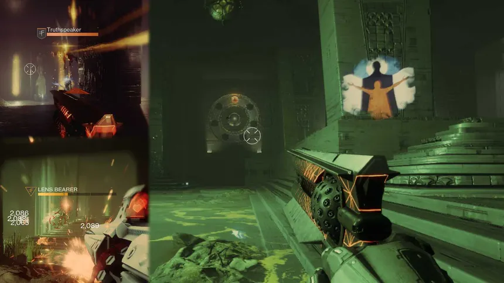

Dungeons
Dungeons are one of the staple activity types of Destiny 2. Being 3 player missions containing various puzzles and favorable loot, they are one of the main selling points of the game.

Dungeons feature various complex mechanics, with each 'encounter' having different ones that must be completed. You go into them blind - either figuring out the mechanics on your own, or watching a guide from peole who do understand the mechanics.
Dungeons - like raids, hold favorable loot. They give some of the best weapons in the game while also giving exclusive exotics that drop from the dungeon - typically ones that are powerful.
Some dungeon exotics include:
- Heartshadow
- Heirloom
- The Navigator
- Buried Bloodline
- Finalities Auger
Back Home